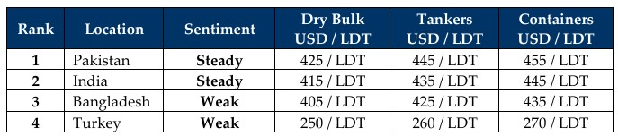

inWeekly Demolition Reports11/08/2025

A week of confusing fundamentals saw nearly all markets reacting bizarrely as upon ”Liberation Day” tariffs from back in Aprilfinally being levied on key destinations (including India) this week, saw turmoil across the board as the week ended. At the onset, oil futures declined 5% and closed the week out at USD 63.90/barrel as Trump goes after Russian oil purchasing nations, leaving concerns around an upcoming Trump – Putin meeting, which set this week’s tone for global oil traders who braced for the unknown, especially as the tariffs announced on Friday even included Russia (rather surprisingly) and China. While the oil futures drop to the tune of 5% was certainly noteworthy, the Baltic Exchange’s dry index advance for a third Friday with an over 2% increase certainly left an optimistic air for ship owners of aging assets, especially for the perennially popular cape index that contributed 4.3% to the overall increase, while supras added a marginal 0.2% to the mix. In the interim, the U.S. Dollar gained ground against India, Pakistan, and Turkey (of course), all while declining against both Bangladesh and China this week. Local steel plate prices at the various ship recycling destinations also reciprocated their share of confusion as despite their own differing movements through the week, a majority ended right back where they started.
Trickling down to the recycling markets, the crazy monsoons of 2025 continue to hammer key locations (especially Bangladesh) as ship recyclers, cash buyers, and ship owners collectively come to grips with the new governing realities of the HKC that is now a compelling force in the Indian sub-continent ship recycling markets today – given all of the changing / additional documentation and inward formalities now mandated. An overall shortage of candidates (as compared to recent years) has also left the industry in a state of virtual stasis as the various anchorages displayed the situation as such, even though all locations reported at least one fresh arrival for the week. Prices meanwhile have and continue to endure a turbulent time, with ongoing tariff dramas and even sanction threats that has left a specter of uncertainty looming over key nations including the ship recycling countries, and this has seen levels decline by at least USD 60/LDT since the peaks seen earlier this year. Yard upgrades continue in Bangladesh and even in (a not as paced) Pakistan market where not a single yard is HKC compliant today. And it is this collection of recyclers that is missing their seats at the bidding tables (subject of course those with provisional DASRs at hand).
Along with a shortage of candidates and apart from some large LDT LNG and bulk carriers that have greeted the various anchorages across recent weeks / months, it has been a comparatively busier time than expected in the Indian sub-continent, especially in India where conflictingly, sanctions drama also continues as a vessel was reportedly arrested at Alang. Moreover, until the Putin – Trump meet-up is concluded, the recycling destiny of over a 1,000 ships, including that of the ship recycling industry, hangs in the balance. But with demand still prevalent in India and the occasional buyer(s) popping up in both Pakistan and especially Bangladesh, where HKC approved recyclers who have gone / nearly gone through their prior deliveries, seem to be coming to the fore. At the far-end, Turkey remains dead as ever, with nothing more than a weak currency to confirm.
For Week 32 of 2025, GMS Market Rankings / vessel indications are as below.

📄 Download PDF: Ship-recycling-market-insight-Week-32-08-08-2025-Liberation_Day.pdfSource: GMS,Inc.https://www.gmsinc.net/gms_new/index.php/web